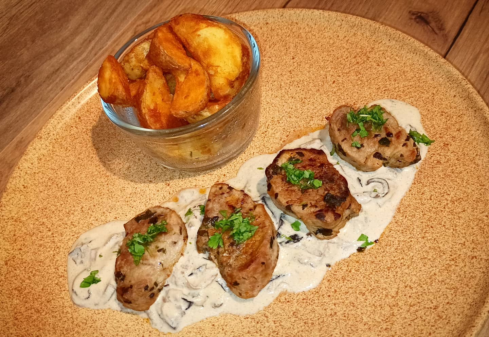

Hubová omáčka podľa @nasporaku — Normy Jedál
Bravčová panenka na hubách
Suroviny :
panenka
maslo s medvedím cesnakom ( bylinkové )
sušené huby
smotana na šľahanie
kyslá smotana
soľ, čierne korenie
Postup :
Mäsko si umyjeme, odblaníme a narežeme na hrúbku 3 - 4 cm ( jemne zatlačíme rukou každý kúsok ). Na panvici si rozpustíme bylinkové maslo a sprudka panenku ( osolenú a nakorenenú ) opražíme z oboch strán. Tento proces trvá zhruba 3 minúty dokopy. Panenku som vybrala a dala zapiecť ešte k zemiakom na 5 - 7 minút. Kto má rád krvavejšiu, tento krok jednoducho vynechá. Výpek z panvice si odložíme.
Omáčka : Huby si povaríme a precedíme. Na rozohriatom masle si huby jemne osolíme, okoreníme a podusíme pod pokrievkou. Pridáme celú smotanu na šľahanie a varíme aspoň 8 - 15 minút. Omáčka by sa nám mala krásne zredukovať a chutiť krémovo. Kto má rád kyslejšie, môže pridať 1 - 2 PL kyslej smotany. Pre tých čo obľubujú hustejšie omáčky, môžu pridať syr v črievku.
Servírujeme s voliteľnou prílohou. Ak máte mäsko radšej prepečené, je dobré poliať si ho ešte odloženým výpekom.
#panenka #bravcovapanenka #filletofpork #pork #meat #meatlover #maso #huby #hubovaomacka #mushrooms #foodphotography #jedlo #recept #recipes #dinner #nasporáku